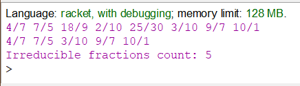
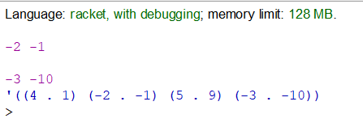

Вибір середовища
Racket — це універсальна багатопарадигмальна мова програмування та мультиплатформенний дистрибутив, який включає мову Racket, компілятор, велику стандартну бібліотеку, IDE, засоби розробки та набір додаткових мов. Мова Racket є сучасним діалектом Lisp і нащадком Scheme. Він створений як платформа для проектування та впровадження мови програмування. На додаток до основної мови Racket, Racket також використовується для позначення сімейства мов програмування та набору інструментів, що підтримують розробку на Racket і з ним. Racket також використовується для створення сценаріїв, навчання інформатиці та досліджень. Racket призначений для розробки програм та мов програмування. Це означає, що з його допомогою можна досліджувати не лише те, як писати програми, а й чому саме так.
Задача 1
Створити список, елементами якого є різні раціональні числа у вигляді дробів. Обчислити кількість елементів в списку, які є нескоротними дробами та надрукувати їх. Для перевірки дробу на скоротність обчислити найбільший спільний дільник (НСД). Якщо НСД дорівнює одиниці, то дріб є нескоротний. Якщо НСД відмінний від одиниці, то дріб скоротний.
Код програми
#lang racket
(define (numer x) (car x))
(define (denom x) (cdr x))
(define (make-rat n d) (cons n d))
(define(print-rat x)
(display (numer x))
(display "/")
(display (denom x))
(display " "))
(define (print-list input-list)
(for ([i (in-list input-list)])
(print-rat i)))
(define count 0)
(define (irreducible input-list)
(for ([i (in-list input-list)]
#:when (= (gcd (numer i) (denom i)) 1))
(set! count (+ count 1)))
(for/list ([i (in-list input-list)]
#:when (= (gcd (numer i) (denom i)) 1))
i))
(define fr1 (make-rat 4 7) )
(define fr2 (make-rat 7 5) )
(define fr3 (make-rat 18 9) )
(define fr4 (make-rat 2 10) )
(define fr5 (make-rat 25 30) )
(define fr6 (make-rat 3 10) )
(define fr7 (make-rat 9 7) )
(define fr8 (make-rat 10 1) )
(define rational-list (list fr1 fr2 fr3 fr4 fr5 fr6 fr7 fr8))
(print-list rational-list)
(newline)
(print-list (irreducible rational-list))
(begin (display "\nIrreducible fractions count: ") (display count))
Результати роботи програми
При виконанні програми створюються раціональні числа у вигляді дробів, які виводяться в рядок. Після цього в рядок виводяться всі нескоротні дроби, зі списку вище, та їх кількість. Перевірка на скоротність дробу виконується, як описано в завданні.
source file link
Задача 2
Створити список комплексних чисел, заданих в тригонометричній формі. Переписати в новий список ті комплексні числа з першого списку, які в геометричній інтерпретації зображують точки в третьому квадранті декартової системи координат.
Код програми
#lang racket
(define (Myreal-part z) (car z))
(define (Myimag-part z) (cdr z))
(define (square x)
(* x x))
(define (magnitude1 z)
(sqrt (+ (square (Myreal-part z)) (square (Myimag-part z)))))
(define (angle1 z)
(atan (Myimag-part z) (Myreal-part z)))
(define (make-from-real-imag x y)
(if (< x 0)(display x) 1)
(display " ")
(if (< y 0)(display y) 1)
(newline)
(cons x y))
(define (make-from-mag-ang r a)
(cons (* r (cos a)) (* r (sin a))))
(list (make-from-real-imag 4 1) (make-from-real-imag -2 -1) (make-from-real-imag 5 9) (make-from-real-imag -3 -10))
Результати роботи програми
source file link
Висновок
Після проведеної роботи було реалізовано дві програми, які реалізують обробку раціональних та комплексних чисел, представленими конструкціями типу "пара". Друга задача виявилася трохи складнішою в розумінні представлення комплексних чисел.